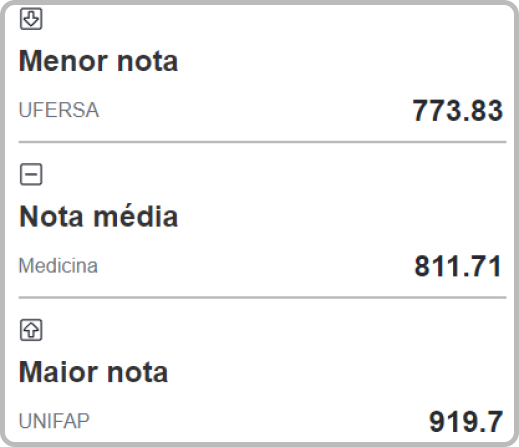

Sobre
Dia a dia
O médico leva uma vida bastante agitada e ocupada com sua profissão. Isso se dá porque na maior parte das vezes este profissional fica a mercê dos problemas de de seus pacientes. Atendimentos de emergência, plantões intermináveis. Tudo aliado a suas consultas usuais, que já tomam os horários durante o dia.
O que é?
O termo medicina é a ciência que permite prevenir, curar e tratar as doenças do corpo humano. O médico é o profissional que busca diagnosticar, tratar e curar pessoas doentes.
Características
Em primeiro lugar, o estudante de Medicina precisa gostar de pessoas pois estará sempre em contato com eles, precisa também gostar da área de ciências biológicas, ter boa comunicação, ser organizado, empático e gostar e estudar muito.

Curso
O curso de Medicina conta com carga horária mínima de 7.200 horas, com previsão de conclusão
em pelo menos seis anos.
Geralmente, é oferecido em período integral pelas instituições de ensino.
O custo de uma faculdade de Medicina sempre foi considerado um dos mais altos no Brasil.
Certamente, é o curso mais caro
nos dias de hoje. Os preços variam de R$ 5.000 a mais de R$ 12.000, mas a
maioria das mensalidades fica entre R$ 7.000 e R$ 8.000.
Melhores faculdades de Medicina no Brasil:
USP
A Universidade de São Paulo (USP),
é uma universidade pública, localizada no
estado de São Paulo, possuindo 22 campus.
UNICAMP
A Universidade Estadual de Campinas
é uma universidade pública do
estado de São Paulo.
UFMG
A Universidade Federal de Minas Gerais
é universidade pública federal,
sediada na cidade de Belo Horizonte,
no estado de Minas Gerais.
UFRGS
A Universidade Federal do
Rio Grande do Sul é uma universidade
pública, situa-se em Porto Alegre,
capital do Rio Grande do Sul.
UFRJ
A Universidade Federal do Rio de Janeiro
é uma universidade federal do Brasil
e um centro de excelência em ensino
e pesquisa no país e na América Latina.
PUCRS
A Pontifícia Universidade
Católica do Rio Grande do Sul
é uma universidade privada e católica
brasileira, com campus localizado
em Porto Alegre.
Grade curricular:

ANATOMIA
Envolve o estudo das estruturas macroscópicas do corpo humano, como esqueleto, musculatura, veias, nervos, órgãos, entre outros.

BIOLOGIA CELULAR E MOLECULAR
É o estudo das composições químicas e estruturais das células, além das funções de cada componente celular.

FISIOLOGIA
Disciplina voltada ao funcionamento do organismo, como, por exemplo, a integração dos órgãos e demais sistemas do corpo humano.

HISTOLOGIA
Verifica as estruturas macroscópicas dos tecidos e órgãos.

IMUNOLOGIA
Tem como foco os mecanismos de defesa do organismo, como eles reagem contra vírus, bactérias e parasitas, protegendo o corpo humano das doenças.
EMBRIOLOGIA
Dedica-se ao desenvolvimento dos organismos, desde a fecundação até o final do desenvolvimento do embrião.

PATOLOGIA
É o estudo das doenças e alterações que elas provocam no organismo, verificando, assim, sintomas e suas relações com os patógenos.
Nota de corte SISU

Mercado
Média Salarial
De acordo com o Sine (Site Nacional de Empregos) um médico inicia sua carreira ganhando entre R$ 4.820 e R$ 8.147. Já no meio dela, a remuneração média passa a ser entre R$ 11.769 e R$ 19.891.
Empregabilidade
O mercado de trabalho para o médico é bastante diversificado. Existem boas oportunidades de emprego em empresas como hospitais, clínicas, clubes, centros de pesquisa ou no serviço público. Boa parte dos profissionais também opta por montar seu próprio consultório particular. A empregabilidade da área, segundo o Ipea (Instituto de Pesquisa Econômica Aplicada), chega a inacreditáveis 97%.
Um curso de pós-graduação é realizado após a conclusão de uma graduação, é muito indicado para quem quer aumentar as chances de desenvolver a carreira e se aprofundar em uma determinada área. A pós-graduação pode ser do tipo lato sensu (cursos de especialização e MBA) ou stricto sensu (mestrado, mestrado profissional e doutorado). Abaixo veja as 15 pós-graduações mais procuradas da Medicina .
Pós-graduação
Pós-graduações

ANÁLISE CLÍNICA
Voltado para análises microscópicas, diagnósticos de doenças e outras atividades em laboratórios.
OBSTETRICÍA
Prepara o estudante para trabalhar com o cuidado de gestantes, mães em trabalho de parto, o período de pós-parto e também com as crianças recém-nascidas.

MEDICINA LEGAL
O médico legal trabalha com realização de perícias e de exames em situações em que a justiça está acionada.
PSIQUIATRIA
Leva o profissional da Medicina a trabalhar com diagnóstico de transtornos psiquiátricos e mentais e capacitação para oferecer tratamento aos pacientes.

IMUNOLOGIA CLÍNICA
Voltado para atividades de pesquisa e laboratoriais da área. Ele aborda os princípios da Imunologia, Biossegurança e diagnóstico de doenças autoimunes.
RESSONÃNCIA MAGNÉTICA
Capacita os profissionais para que trabalhem com a prática do exame.
DERMATOLOGIA
Assuntos relacionados à pele e apêndices cutâneos, como cabelo, pelos e unhas.

DOENÇAS INFECCIOSAS
Estudos sobre agentes etiológicos de doenças como a gripe, infecções de pele, AIDS/HIV, doenças respiratórias como a covid-19, dentre outras.
NEUROCIÊNCIA
Estuda o cérebro e todo o sistema nervoso do ser humano.
CRM
O Conselho Regional de Medicina (CRM) é um órgão estadual vinculado ao Conselho Federal de Medicina (CFM). Em todos os estados do Brasil, de Manaus até o Rio Grande do Sul, há uma organização do tipo, que fiscaliza e regulamenta a atuação dos médicos. Todo profissional que deseje atender pacientes no Brasil precisa estar vinculado ao conselho regional do estado onde mora. Ao fazer isso, ele recebe um número de registro, que é exatamente o CRM. Esse código é único para cada pessoa. O CRM só pode ser solicitado por você depois que finalizar o curso de Medicina. Ele funciona como seu “atestado” de liberação para atuar como médico, seja em clínicas, hospitais ou de forma autônoma.